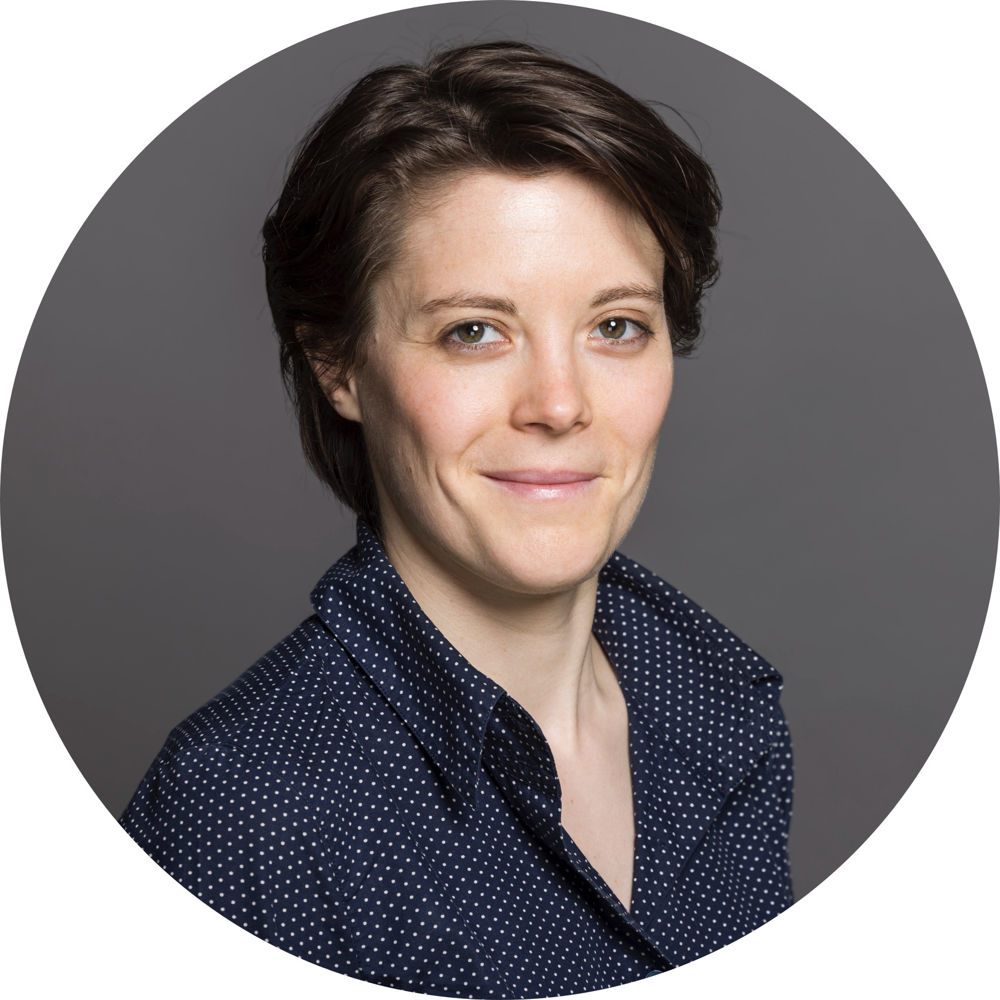
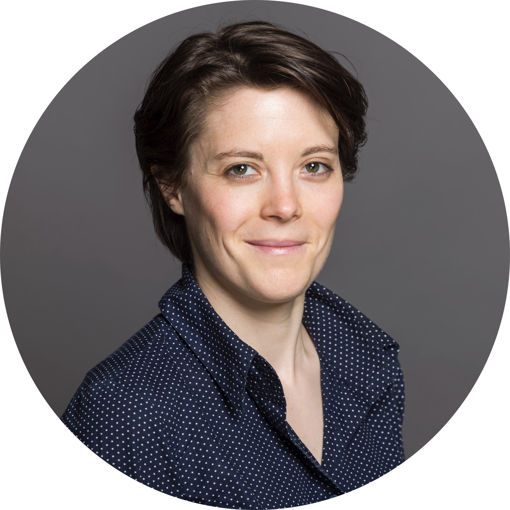
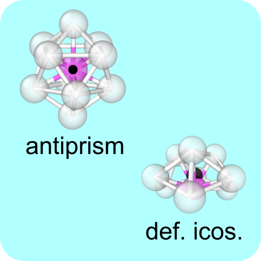

|  |
Camille Scalliet
Chargée de recherche CNRS
|
|  |
Camille Scalliet
Chargée de recherche CNRS
|
|
• I have funding for a two-year postdoctoral position. If you are interested in theoretical and numerical studies of slow, glassy, confined liquids or the dynamics of disordered bulk solids and membranes, please get in touch by email. The postdoctoral researcher will join the Laboratoire de Physique de l'École Normale Supérieure in central Paris, and expected to start during Fall 2025 (flexible).
• Applications are open for Marie Sklodowska Curie Postdoctoral Fellowships on the topic "Disorder-controlled nanofluidic transport". See the project description here. Applications should be made before May 15th, 2025 at this link. Please do not hesitate to get in touch if you are interested in applying to the call. |
|
I am a chargée de recherche at CNRS, based in the laboratoire de physique de l'École Normale Supérieure in Paris. As a theoretical physicist, I work on various problems in soft and condensed matter, with a focus on the statistical physics of disordered systems. I search for new dynamic and thermodynamic behaviors combining analytical and computational approaches, and investigate how they emerge from disorder and non-equilibrium conditions. In 2016, I graduated in Physics from the Ecole Normale Supérieure de Lyon. I received my PhD in 2019 from the University of Montpellier, advised by L. Berthier and F. Zamponi (ENS, Paris). I then joined the University of Cambridge as a postdoctoral researcher working with M. E. Cates. In 2020 I became an Herchel Smith postdoctoral Fellow based in the Department of Applied Mathematics and Theoretical Physics at the University of Cambridge, and a Fellow of Sidney Sussex College (2020-2023). In 2022, I was awarded the Young Scientist Prize in Statistical Physics from the International Union for Pure and Applied Physics. I was awarded a L'Oréal-UNESCO For Women in Science Young Talents France Fellowship in 2018. For more information please visit the Research, Publications, Talks or CV pages. |
 |
We employ machine learning-driven molecular dynamics simulations to investigate the rippling dynamics of freestanding graphene sheets in the absence or presence of atomic defects. We demonstrate the presence of a disorder-induced dynamic transition from freely propagating ripples to frozen and static buckling.
F. L. Thiemann, C. Scalliet, E. A. Müller, A. Michaelides, Defects induce phase transition from dynamic to static rippling in graphene, PNAS, 122 (9) e2416932122 (2025) |
|  |
We investigate the (anti)-correlation between locally favored structures and dynamic excitations in computer model glass-formers and colloidal experiments. We find that excitations occur increasingly further away from locally favored structures with supercooling below the mode-coupling crossover.
D. Lang, C. Scalliet, C. P. Royall, Anti-correlation between excitations and locally-favored structures in glass-forming systems, Phys. Rev. E (in press), preprint. |